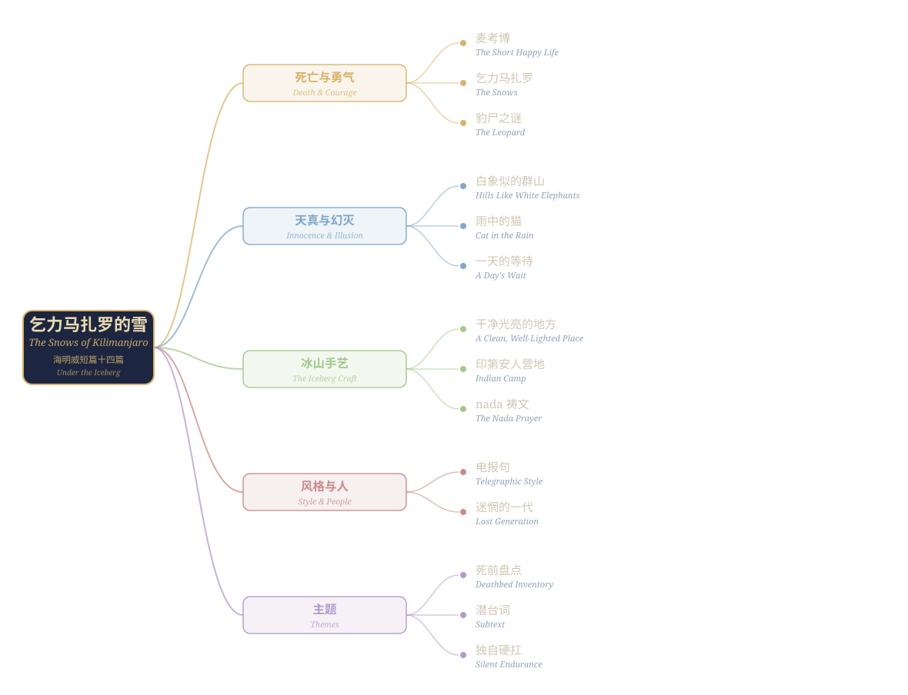

乞力马扎罗的雪
〇 · 书籍信息
基本信息
| 书名 | 《乞力马扎罗的雪》（The Snows of Kilimanjaro）——本册以同名短篇领衔，收《弗朗西斯·麦考博稍纵即逝的幸福生活》《白象似的群山》《雨中的猫》《一天的等待》《一个干净、光亮的地方》《印第安人营地》等十四篇 |
|---|---|
| 作者 | 欧内斯特·海明威（1899–1961），美国作家，1954 年诺贝尔奖得主。「短篇小说大师」的称号由此册可见一斑：死亡、勇气、幻灭，全部装进几十页 |
| 出版 | 《乞力马扎罗的雪》1936 年首刊于 Esquire；《麦考博》1936 年同刊；两篇非洲题材均出自作者本人的 Safari 经验 |
| 体裁 | 极简主义短篇（minimalist fiction）。「冰山理论」：八分之七在水下——对话只给水面，读者自己算深度 |
| 一句话 | 一个作家在非洲草原上等死，把一生没写出来的东西在死前过了一遍；另一个人在非洲打出平生第一头狮子，两小时后被妻子打死——海明威的短篇里，死亡从不预告，勇气从不加分。 |
一 · 核心主题总览
十四篇可归入四个抽屉，每个抽屉一把锁：① 死亡与勇气（非洲两篇）
《麦考博》讲一个富人第一次「变得勇敢」，勇敢之后立即死去；《乞力马扎罗》讲一个作家死前盘点自己的一生。海明威的死亡观高度一致：死亡没有重量差别，差别只在迎接它的方式。
② 天真与幻灭（对话三篇）
《白象似的群山》整篇是候车室里的堕胎对话，从头到尾没有说出那个词；《雨中的猫》妻子要一只猫，要的其实是整个人生；《一天的等待》九岁男孩把华氏 102 度当成致命的摄氏，独自等死——幻灭是海明威的默认结局。
③ 冰山手艺（文体）
删掉解释、删掉心理描写、删掉形容词——只留动作与对话。他自述原则：你知道的部分省略掉，冰山露出水面八分之一。精读方法：每读完一篇，试着把「水下八分之七」写出来。
④ 迷惘的一代
战后一代的虚无感是海明威全部作品的底色：交易、狩猎、喝酒、调情，全是填充虚无的仪式。他的人物不谈意义，只谈怎么把这一天过完。
二 · 第一抽屉 死亡与勇气—— 麦考博 · 乞力马扎罗 ——
弗朗西斯·麦考博稍纵即逝的幸福生活
午餐帐篷下，三个美国人装作什么都没发生过——富商麦考博刚在狮子面前当众逃跑。猎手威尔逊奉陪、妻子玛格丽特轻蔑。第二天打野牛，麦考博突然「进入了从未到达的境地」：不再恐惧，端枪冲上。三十分钟后，玛格丽特从车上一枪「误杀」了他——她射中的是那个再也控制不住的丈夫。威尔逊的冷眼收尾：他想说「妇人也可以……」忍住了。海明威的非洲经验给了这两个短篇全部细节：枪、酒、侍从、与大草原的宿命感。
◆ 语言学习 · 麦考博
| safari /səˈfɑːri/ | n. 游猎 —— 例句：the safari（两篇非洲题材的核心词）。斯瓦希里语借词；safari suit 猎装 |
|---|---|
| gangrene /ˈɡæŋɡriːn/ | n. 坏疽 —— 例句：the gangrene（乞力篇致死因）。医学词；口语 say gangrene sets in |
| contemptuous /kənˈtemptʃuəs/ | adj. 轻蔑的 —— 例句：a contemptuous glance（玛格丽特段）。contempt 名词；in contempt of「藐视」 |
| bolster /ˈbəʊlstə/ | v. 支撑，壮胆 —— 例句：bolster his courage（麦考博转变前）。 bolster sb's confidence 高频 |
句型 ｜ 「It was now lunch time and they were all sitting under the double green fly of the dining tent pretending that nothing had happened.」——现在分词短语 pretending that… 收尾，把「集体伪装」挂在整个句子上。用分词短语给「表面平静」记账，一句就够：They were all having coffee pretending the deadline had never been missed.
乞力马扎罗的雪
开篇题词立住全篇：乞力马扎罗西峰旁有一头风干冻僵的豹尸，没有人解释它在寻找什么。作家哈里腿上坏疽，在草原的行军床上等死；恋人海伦富足、体贴、无微不至。每段现实之间插入斜体回闪：战争、巴黎、雪、没写完的一切——他承认摧毁自己才华的正是他自己：不写、背叛自己相信的东西。鬣狗在帐篷外呜咽了一夜。清晨，飞机来接他，爬升、穿过风暴、直抵乞力马扎罗的山顶——「无边无际，在阳光下白得难以置信」。海伦掀帐看他：死了。最美的那一程，是死后做的梦。
◆ 语言学习 · 乞力马扎罗
| carcass /ˈkɑːkəs/ | n. 兽尸 —— 例句：the dried and frozen carcass of a leopard（题词）。与 corpse 辨析：carcass 用于动物 |
|---|---|
| gangrenous | adj. 坏疽性的 —— 例句：the gangrenous leg（病腿段）。与 gangrene 联记；医学叙事高频 |
| vulture /ˈvʌltʃə/ | n. 秃鹫 —— 例句：the birds（全篇死亡的旁观者）。a culture of vultures「秃鹫文化」——文学中的死亡意象 |
| epigraph /ˈepɪɡrɑːf/ | n. 题词 —— 例句：本篇的豹子题词。学術写作引用先贤置于卷首即 epigraph |
习语 ｜ Rot and poetry. Rotten poetry.——哈里醉后的双关咒骂：rot（腐烂）与 poetry 同框，把「灵感枯竭」骂成一句话。重复 + 前缀化（rotten）是海明威式的毒舌节奏；学口语的攻击性，先学这种二拍子。
三 · 第二抽屉 天真与幻灭—— 群山 · 猫 · 一天的等待 ——
白象似的群山
西班牙小火车站，一对恋人等快车。全景只有四十分钟：两杯啤酒、两座山、一段绕来绕去的对话——女孩说群山像白象，男人说手术「真的非常简单」。全文没有出现那个词：堕胎（abortion）藏在 operation 的委婉里；女孩最后说「我觉得好极了，我好极了」，镜头停在不远处铁轨交汇的地方。昆德拉的读法：这段对话不属于任何具体的心理，它属于所有时代所有男女——潜台词写作的天花板样本。
◆ 语言学习 · 群山
| white elephant | n. 白象 —— 例句：They look like white elephants.（首句对白）。英语习语「昂贵而无用的累赘」——书名的双关钥匙 |
|---|---|
| operation /ˌɒpəˈreɪʃn/ | n. 手术（委婉语）—— 例句：It's really an awfully simple operation.（核心委婉）。operation 一词的「沉默」是全篇的结构 |
| anise /ˈænɪs/ | n. 茴香 —— 例句：Anis del Toro（两人喝的酒）。借物写情：喝什么酒即关系状态 |
| curtainside | n. 帘布 —— 例句：the bead curtain（酒馆门口）。帘子是两人之间的「隔」——海明威的道具即修辞 |
句型 ｜ 「They look like white elephants.」——look like + 复数名词的最简明喻，全篇的题眼。学潜台词第一步：让人物谈论风景，读者谈人物。仿写：The office looks like a waiting room.——话没说，全说了。
雨中的猫 & 一天的等待
《雨中的猫》：意大利小旅馆，雨天，美国妻子看见窗外一只躲雨的猫要抱回来，老板娘替她撑伞，猫却没了——回房后她列举了一整套想要的生活（银器、蜡烛、猫、新衣服），丈夫只翻着书说「别烦」；最后女仆抱着一只大玳瑁猫敲门。《一天的等待》：男孩发烧 102 度（华氏），把法文课本上的换算错当摄氏，认定自己必死，独自 hard 承受一整天的「死期」直到父亲发现——「你们不用怕，我就是熬不住」。两篇合看：海明威的儿童与妻子共用同一种美德——独自硬扛，不解释。
◆ 语言学习 · 猫与等待
| tortoiseshell /ˈtɔːtəsʃel/ | adj. 玳瑁色的 —— 例句：the big tortoiseshell cat（结尾）。复合形容词：tortoise + shell |
|---|---|
| Fahrenheit /ˈfærənhaɪt/ | n. 华氏 —— 例句：One hundred and two.（温度对话）。与 Celsius 换算梗正是本篇机关；°F/°C 缩写必会 |
| flush /flʌʃ/ | v. 脸红；（病中）发烫 —— 例句：flushed cheeks（病中段）。flush the toilet 另义；一词两景 |
| endure /ɪnˈdjʊə/ | v. 忍受 —— 例句：I can't stand it（实为 stand）→ endure 是海明威式的「硬扛」词根。名词 endurance「耐力」——海明威全部人物的默认品质 |
句型 ｜ 「About how long will it be before I die?」——孩子问 death 的句式平静得像问几点吃饭。about + how long + before 从句，把「恐惧」装进「咨询」的语法里。越大的事，问得越像小事——海明威的对话定价法。
四 · 第三抽屉 冰山手艺—— 干净的地方 · 印第安营地 ——
一个干净、光亮的地方
深夜咖啡馆，一位聋老头每晚喝到很晚。两个侍者的对话撑起全篇：年轻的想早点打烊，年长的懂——老人要的不是酒，是一个「干净、光亮」的地方：有尊严的失眠场所。年轻侍者不以为然；年长侍者独白里那段著名的「祷文戏仿」把主祷文的词全换成 nada（虚无）。冰山理论在本篇登峰造极：虚无主义全程没有名词化，全靠对话节奏渗出。
◆ 语言学习 · 咖啡馆
| well-lighted | adj. 照明良好的 —— 例句：A Clean, Well-Lighted Place（标题）。well- 副词构词族：well-dressed / well-paid |
|---|---|
| nada /ˈnɑːdə/ | n. 虚无（西语借词）—— 例句：Our nada who art in heaven（戏仿祷文）。英语俚语「啥也没有」；文中升格为哲学名词 |
| shave /ʃeɪv/ | v. 剃须；擦过 —— 例句：the shadow of the leaves…（描写段）。另义 shave off / a close shave「千钧一发」 |
| bodega /bəʊˈdeɪɡə/ | n. 酒铺 —— 例句：a bodega（年轻侍者去处的对照）。西语借词——咖啡馆 vs 酒铺是「干净」与「不干净」的对位 |
句型 ｜ 「It was very late and everyone had left the cafe except an old man who sat in the shadow the leaves of the tree made against the electric light.」——影子 the leaves made 的省略 that 定从。「影子」写孤独，不用一个抽象词：环境描写即心理描写。
印第安人营地
尼克的父亲（医生）被请去印第安营地接生：产妇难产两天，丈夫腿伤躺着听。没有麻药，父亲用大折刀做剖腹产——成功。产妇的丈夫在毯子下悄然割喉自尽。Nick 问他：「爸爸，死很难受吗？」「我觉得不怎么难，要看情况。」孩子第一次目睹死亡与暴力，父亲给的解释只有一句——海明威最擅长的「成人礼时刻」：一个动作（划船回家）完成全部教育。
◆ 语言学习 · 营地
| caesarean /sɪˈzeəriən/ | n. 剖腹产 —— 例句：the caesarean（手术段）。Caesarean section 全称；凯撒词源 |
|---|---|
| jack-knife | n. 大折刀 —— 例句：the jack-knife（手术器械）。jack- 前缀工具族：jackhammer / jackscrew |
| canoe /kəˈnuː/ | n. 独木舟 —— 例句：in the canoe（结尾父子）。写作里最「安静」的交通工具——用来收束 |
| stanch /stɔːntʃ/ | v. 止血 —— 例句：stanch the flow（手术段）。也拼 staunch；止血带 tourniquet 同场景词 |
习语 ｜ Is dying hard, Daddy?——孩子问句的三件套：称呼（Daddy）、现在分词问感受（hard）、不迂回。把「死亡」放进日常疑问句，是海明威式冷静的极限操作；仿写：Is failing hard, Dad?——问句越平，分量越重。
五 · 第四抽屉 风格与人—— 电报句 · 迷惘的一代 ——
「迷惘的一代」与冰山原理
海明威的文体可以被总结成几个操作规则：一、删形容词（尤其判断性的）；二、对话不加引导语（said 之外不用）；三、不解释动机；四、重复制造节奏；五、结尾停在动作上。「迷惘的一代」一词来自格特鲁德·斯泰因，海明威把它钉在《太阳照常升起》扉页——这册十四篇正是这套世界观的短篇标本库。学他的写法，先学他的删法：把你写好的稿子删掉三分之一，剩下的才是海明威味。
◆ 语言学习 · 风格
| sparse /spɑːs/ | adj. 稀疏的，极简的 —— 例句：a sparse prose style（文评常用语）。sparsely populated 地广人稀 |
|---|---|
| understatement /ˈʌndəsteɪtmənt/ | n. 低调陈述 —— 例句：the classic understatement（文评词）。to understate；英式幽默的引擎 |
| candid /ˈkændɪd/ | adj. 直白的 —— 例句：candid dialogue（对话评语）。candid camera / candour 联记 |
| restraint /rɪˈstreɪnt/ | n. 克制 —— 例句：stylistic restraint（文评词）。与《黑暗的心》全书关键词同一个词——两种文学用的解药相同 |
习语 ｜ the rest is under the water——「冰山理论」自述：The dignity of movement of an ice-berg is due to only one-eighth of it being above water.（冰山移动的庄严，源于它只有八分之一露出水面）。学写作先学藏；藏的比例，就是尊严的比例。
六 · 人物图鉴与成长弧线—— 主角配角 · 一张表看穿 ——
主要人物
弗朗西斯·麦考博——富商：狮子面前逃跑，野牛面前成为勇者，勇者三小时后死于妻子枪下。他的「幸福生活」短到只有两个动作——不再害怕，然后死亡。
哈里 the writer——《乞力马扎罗》主角：被财富与舒适豢养的作家。弧线：抱怨 → 回闪自我审判 → 梦中飞升 → 死。他的遗作是这场死亡本身。
玛格丽特 Margot——麦考博之妻：狩猎旅行的实际主人。她的枪声是全册最冷的一响——「误杀」二字由读者自己删除。
女孩 Jig——《白象似的群山》里的「女孩」（the girl——不是 woman）：对话里唯一想改变话题的人。她的三个 looks like 白象，是全篇唯一的抒情。
尼克 Nick——印第安营地与多篇中的少年：海明威的半自传镜子——所有成人世界的残酷，都通过他的眼睛第一次上映。
次要人物（功能位）
| 威尔逊 Wilson | 白人猎手：职业者的傲慢与准绳——他鄙视的与羡慕的都是同一种东西：有钱人的勇气 |
|---|---|
| 海伦 Helen | 哈里的富太太：体贴到无懈可击——她的「好」，正是哈里才华的坟墓 |
| 老板娘 | 《雨中的猫》里的旅馆老板娘：以礼数包裹体面，替妻子撑伞——意大利式的好客反衬美国式婚姻的空 |
| 聋老头 | 干净地方的常客：失眠、富有、整洁——虚无主义的贵族 |
| 产妇的丈夫 | 从头到尾躺在毯子下面——海明威最极端的「冰山人物」：一句话不说，完成全书最重的动作 |
七 · 主题与象征—— 每个道具都在说话 ——
| 豹尸 ↔ 无用的追寻 | 冻僵在海拔一万九千英尺的豹子：没有人解释它在寻找什么——每个追到自己极限的人都是它 |
|---|---|
| 坏疽 ↔ 灵感的坏死 | 腿上的 gangrene 与「从未写出的作品」是同一种东西的两张照片 |
| 白象 ↔ 昂贵的累赘 | 群山/胎儿/关系三重所指——习语 white elephant 的完美文学化用 |
| 雨中的猫 ↔ 被拒绝的渴望 | 妻子要的猫最后「又来了一只」：需要从不精确兑现，兑现的是替代品 |
| 102 度 ↔ 翻译的歧义 | 华氏与摄氏之间隔着一个孩子的死亡错觉——误解的深度取决于知识的刻度 |
| nada ↔ 虚无的语法 | 把主祷文换成 nada：信仰的结构还在，内容已被掏空 |
八 · 写作手法赏析—— 怎么写，就能怎么学 ——
① 电报句与重复
海明威的句长中位数极短，且靠重复开头（He was… He was…）推进。节奏先于内容抵达读者——模仿他，先数自己每句的平均词数。
② 零心理描写
人物想什么一律不给，只给「做了什么、说了什么」。读者被迫成为心理分析师——参与感即沉浸感。
③ 对话的潜台词
《白象似的群山》全程避写核心词；《麦考博》的夫妻对话句句带刺却不提婚姻。让最重要的词缺席，它就会在读者脑中加倍响。
④ 斜体回闪（意识流轻量化）
《乞力马扎罗》用斜体段落做死前回闪，与草原现实交替——不用「他想」二字就完成时空切换：排版即叙事。
九 · 名段欣赏—— 原文精读 · 逐段赏析 ——
十 · 金句摘录—— 15 条 · 中英对照 · 带出处 ——
"The marvellous thing is that it's painless."妙的是，这并不疼。—— 乞力马扎罗的雪 · 开篇
"It was morning and had been morning for some time."天亮了，而且已经亮了好一阵子。—— 乞力马扎罗的雪
"He had destroyed his talent by not using it, by betrayals of himself and what he believed in."他毁掉了自己的才华——靠的是不用它，靠的是背叛自己与自己相信的东西。—— 乞力马扎罗的雪
"It was never what he had done, but always what he could do."从来不是他做了什么，而是他本可以做什么。—— 乞力马扎罗的雪
"Now he would never write the things that he had saved to write until he knew enough to write them well."那些他留到「懂得足够多再写」的东西，现在永远写不成了。—— 乞力马扎罗的雪
"Rot and poetry. Rotten poetry."腐烂和诗。烂透的诗。—— 乞力马扎罗的雪
"They look like white elephants."那些山看上去像白象。—— 白象似的群山
"It's really an awfully simple operation, Jig."那手术真的非常简单，吉格。—— 白象似的群山
"I feel fine. There's nothing wrong with me. I feel fine."我觉得好极了。我没什么毛病。我好极了。—— 白象似的群山 · 结尾
"About how long will it be before I die?"大概还要多久我才会死？—— 一天的等待
"It was a hundred and two."一百零二度。—— 一天的等待
"Is dying hard, Daddy?"爸爸，死很难受吗？—— 印第安人营地
"Our nada who art in heaven, hallowed be thy name."我们的虚无，在天上，愿你的名受显扬。—— 一个干净、光亮的地方
"午饭时分，他们全都坐在就餐帐篷的双层绿帆布帐顶下，装作什么都没发生过。"—— 译文版 · 麦考博 开篇
"隐藏在这场简单而寻常的对话背后，没有任何一点是清楚的……好像这出对话从世界初创之日起就在这里等着让无数对男女去说。"—— 译文版 · 译者序转引昆德拉论白象似的群山
十一 · 拓展阅读—— 原文 · 词条 · 译文 ——
作者与文本
- The Snows of Kilimanjaro · 英文维基百科 —— 出版与改编脉络
- Ernest Hemingway · 英文维基百科 —— 生平、诺奖与文体研究入口
- 《乞力马扎罗的雪》· 中文维基百科 —— 译本与评介
核心篇目
- Hills Like White Elephants · 英文维基百科 —— 潜台词教学的第一样本
- A Clean, Well-Lighted Place · 英文维基百科 —— nada 祷文与两个版本之谜
延伸阅读
- Iceberg Theory · 英文维基百科 —— 海明威的文体自述（出自《午后之死》）
- 豆瓣 · 海明威中译本检索 —— 对照不同译本
十二 · 个人感悟与心得—— 三点心得 ——
读海明威短篇集：三点心得
其一，才华死于「留到以后」。哈里的自我诊断是全书最痛的一页：他不是没时间写，是把「等懂得更多再写」当成了借口。这句话对任何领域都成立——「留到准备好了再做」是最体面的拖延。动作：把「以后写/以后做」清单里最旧的一项拿出来，本周只做它的前二十分钟。前二十分钟之后，你会自己走完剩下的。
其二，学「少说」的技术。白象似的群山把最重要的词藏起来，读者反而全懂。沟通与写作同理：把结论词压住，让事实与场景先走——汇报不说「这有问题」，先给数据与现场；文字不说「感动」，先给那个动作。练习法：写完一段，删掉所有形容词再读一遍，如果意思没塌，说明它们本来就是多余的。
其三，独自硬扛不是美德，是成本。九岁的施茨茨（Schatz）独自等了一整天死亡，只因不敢开口问单位换算。恐惧最怕的是被说出名字。落到自己：把「不确定但不敢问」的事列出来——那些事通常一个十分钟的提问就能清零。海明威人物的美在硬扛，读者的功课恰恰是别学他们这一条。
一句话收束：冰山露出水面八分之一，那八分之一的庄严，全靠水下八分之七撑着。写少一点，藏多一点；先动手，别留到「懂了再写」。
十三 · 一页速查（复习用）
| 篇目框架 | 非洲双篇（麦考博 / 乞力马扎罗）+ 对话三篇（群山 / 猫 / 等待）+ 咖啡馆与营地 + 风格总论 |
|---|---|
| 乞力马扎罗骨架 | 题词豹尸 → 坏疽等死 → 斜体回闪 → 飞升之梦 → 死亡揭晓 |
| 群山机关 | 全文不写 abortion；「白象」= 累赘；结尾三连 I feel fine |
| 冰山原则 | 删形容词 / 零心理 / 对话潜台词 / 结尾停动作 / 排版切换时空 |
| 词汇 TOP12 | safari / gangrene / carcass / vulture / white elephant / operation / Fahrenheit / endure / nada / sparse / understatement / restraint |
| 死亡观 | 死亡没有重量差别，差别只在迎接它的方式 |
| 译者序要点 | 1954 诺奖 / 《老人与海》普利策 / 「迷惘的一代」出处 |
| 对照阅读 | 《老人与海》（长篇冰山）/ 《太阳照常升起》（迷惘的一代正文） |
十四 · 全书思维导图—— 一图纵览 ——

一图纵览全书骨架 · 中英双语对照 · 手机端可左右滑动查看全图